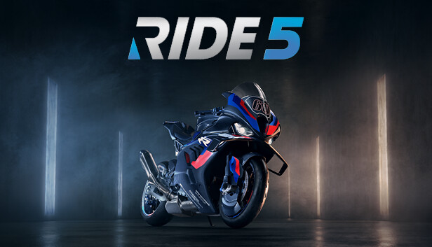
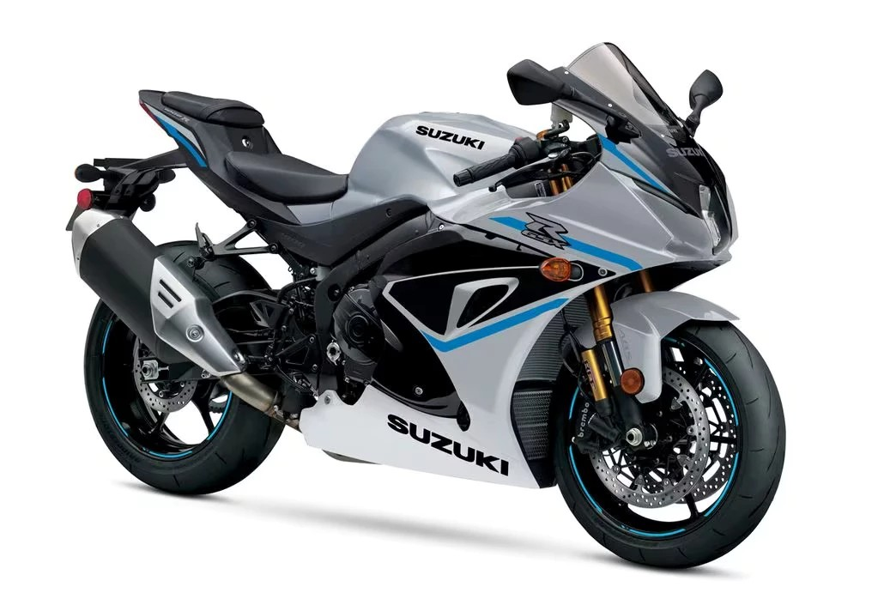
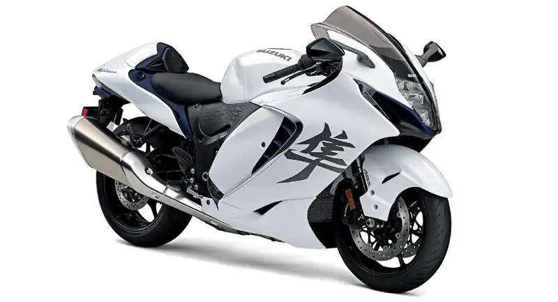

ประวัติส่วนตัว (Resume / Profile)
ชื่อ-นามสกุล: เกียรติศักดิ์ บุญมา
รหัสนักศึกษา: 69319010002
ระดับการศึกษา: ประกาศนียบัตรวิชาชีพชั้นสูง (ปวส. 1) สาขาวิชาเทคโนโลยีสารสนเทศ 1/1
สถานศึกษา: วิทยาลัยเทคนิคน่าน
ประวัติการศึกษา & ฝึกงาน
- 📌 จบการศึกษาระดับ ปวช. สาขาวิชาเทคโนโลยีสารสนเทศ วิทยาลัยเทคนิคน่าน
- 📌 ผ่านการฝึกงานช่างเทคนิคซ่อมบำรุง ต้อนรับลูกค้า คลังสินค้า และจัดส่ง ที่ร้านคลิกไอที น่าน
ทักษะและความสามารถ (Technical Skills)
- 💻 Web Development: HTML5, CSS3, JavaScript, TypeScript, Vue 3, Nuxt 3, Bootstrap 5, Vuetify, PHP, MySQL
- 🗄️ Database & Administration: Relational Database Design, SQL Queries, phpMyAdmin, DBeaver
- ⚡ Hardware & IoT: Microcontrollers (ESP32 DevKit V1, NodeMCU ESP8266), Arduino IDE, Blynk IoT Platform, Sensors & Actuators
- 🛠️ Tools & Workflows: Git, GitHub, VS Code Terminal
ความสนใจส่วนตัว & เกม (Hobbies & Gaming)
- 🎮 Gaming: Counter-Strike 2 (CS:GO / CS2), Call of Duty, Minecraft (Java Edition), ROV, Ride 5
- 🏍️ Motorcycle สนใจรถจักรยานยนต์




